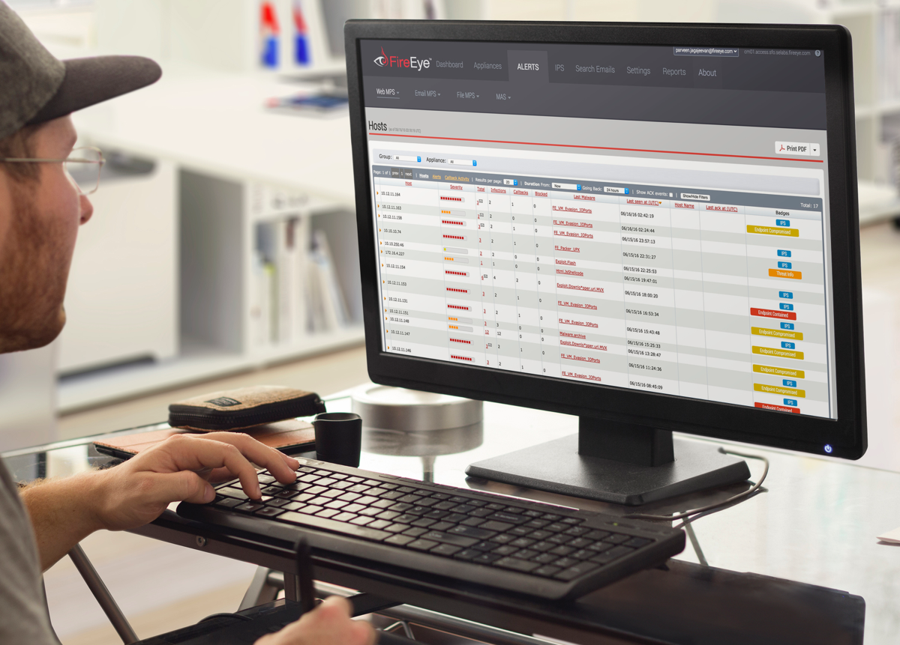

As a manager of design, I redesigned FireEye’s network security products so that their global customer base became more adept at handling threats to their infrastructure.

Empathy is always the starting point
FireEye is a top contender in the new wave of cybersecurity upstarts who are changing how enterprise companies think of protecting their most important assets. I joined the small team of designers as the lead during a tumultous time when the product roadmap was about to go through some major changes.
FireEye’s main front end framework had not changed since the company’s inception 10 years ago and in order to keep up with the competition and meet customer requests, a new refresh on a new platform had to be built.

Even though it was antiquated, I performed an audit on all of the current interfaces to understand what was and was not working well from a usability standpoint. I took notes as I went along since the interfaces are deep and complicated.

What a security analyst does
I needed to better understand how users interacted with our product in their day to day jobs yet it was hard to lock down a lot of past research on the matter. To help my brain explore this narrative, I storyboarded a typical day based on what I could dig up.
Nothing is more raw than actually talking to users so I fought to get in front of them and have them walk me through how they use FireEye’s products. Although this was a process I had to define from scratch, I was able to speak to 5 customers and help put together a presentation for the entire department to review.

What keeps our users up at night
Through what has been collected thus far, I put together the key insights I wanted to address for a redesign.

Leading ideation efforts
We looked through our data and based on the roles that we had identified, we did some brainstorming on how product features could help each type of user based on the collective fears, needs, or wants that had been defined. This also lead us into discussion about actual interface elements based on the features.

New concept is born
Our design team brainstormed a few concepts that needed to be evaluated such as giving users better insight and control over their security landscape. We came up with new features that would help in these regards. The features were introduced as a container for multiple alerts called Investigations and each would contain many advanced features.

Investigations come alive
It was time to put together a few wireframes so that we could collaborate with the broader Engineering team. Our concepts required a few iterations and we had ended up creating over 100 wireframes including the features we wanted to incorporate.

Getting others in the game
Investigations resulted in over 50 unique screens that strung together into a cohesive flow which took our entire team weeks upon weeks to get right. We would iterate with the rest of the Engineering and Product teams through collection of feedback via sticky notes. Sometimes there wouldn’t be enough table space to review it all!

A problem surfaces
I shared our designs with the users I researched earlier via an interactive prototype in Axure. It was discovered that there were problems with the Investigations concept. Each user was hesitant to abandon the existing Alerts experience for fear of missing anything important due to transitioning to something new.
Smoother guide to Introductions

After reviewing feedback internally, we decided to not pivot users into the Investigations experience but start to bleed some much needed features into the existing Alerts experience. You can think of the new approach based on this modified graphic.
The new alerts experience was introduced with some of the features of Investigations without making users learn a new experience. Giving users better insight was a key focus on features that were prioritized into this earlier release.

Becoming Atomic
When we had motion to move forward with development, we had to create a better system of documenting features. I had been introduced to Brad Frost’s Atomic Design concept and felt it was the perfect model to follow in terms of production. This especially worked for me as I have a life science degree!

Our team went through all existing interfaces to label patterns that were Atoms, Molecules, and Organisms. We documented the components on internal wiki pages and flushed it out with some additional documentation such as microinteractions.